|
<< Click to Display Table of Contents >> 8.0.16.3 |


|
8.0.16.3
|
<< Click to Display Table of Contents >> 8.0.16.3 |
|
October 16, 2018
Features |
Added additional features to Order Flow + items Order Flow + Feature # 13084
The Order Flow Depth Map now has a real-time display that graphs the highest depth volume seen at each price level for the bar type it is applied to (1 second in the example below). This creates a simple visualization of where the largest depth is.
Volumetric bars now have a profile view to easily identify where the largest volumes occurred.
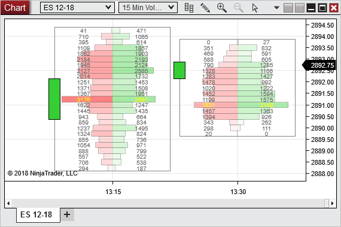
Order Flow Volume Profile using large composite modes such as month will build from the start of the month rather than a month back from the current date.
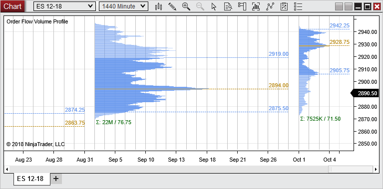
Order Flow Volume Profile with a Price Profile Type will now show an O and a C to represent the open and close.
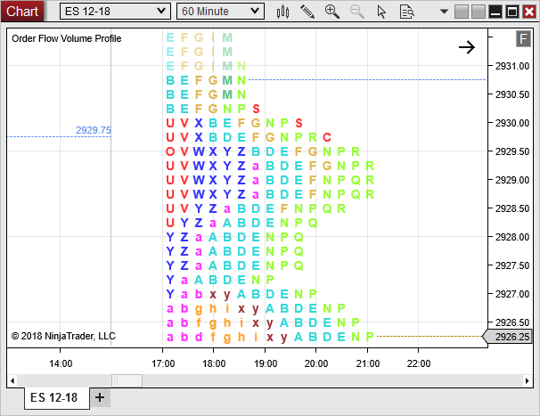 |
Added the ability to resize the Chart Trader Chart Trader Feature #13132
Now the Chart Trader size can be adjusted to your preference.
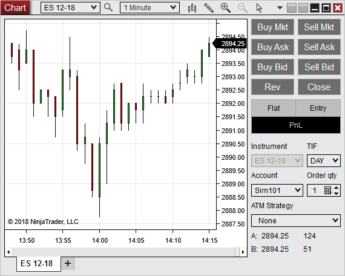 |
Added templates for Indicators Indicator Feature #13129
Added the ability to save templates for indicators to more easily manage different configurations of indicators for your needs.
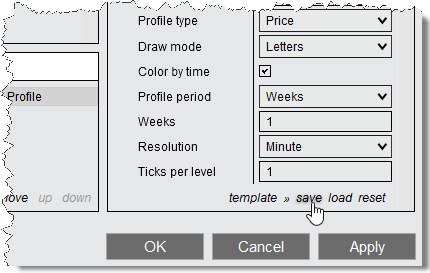 |
Added Fibonacci and Camarilla Pivots Indicator Feature #12834
Pivot indicators calculate areas of potential support and resistance based on values from the prior trading session.
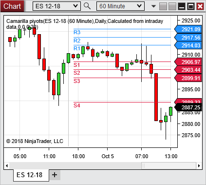 |
Added Choppiness Index Indicator Feature #12779
The Choppiness Index is an indicator that determined if the market is choppy (trading sideways) or not choppy (trading within a trend in either direction). A high value is more choppy. A lower value indicates the market is trending.
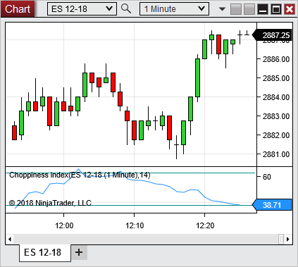 |
Added Vortex Indicator Feature #12780
The Vortex is an oscillator used to identify trends. A bullish signal triggers when the VIPlus line crosses above the VIMinus line. A bearish signal triggers when the VIMinus line crosses above the VIPlus line.
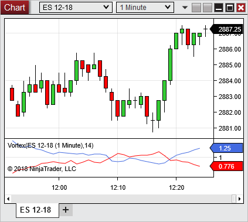 |
Added Block volume Indicator Feature #13069
Block Volume can track how many block trades occurred within a bar. It can display the number of block trades or the total volume of the block trades. This could even be used to count how many ticks occurred within a bar. Historical tick data is required to historically calculate this indicator.
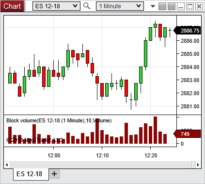 |
Added FX Tile Indicator Feature #13071
The FX Tile display a tile similar to the tiles in the FX Board, directly on the chart. It will display the spread, can be moved around, and can even be used to place order when Chart Trader is enabled.
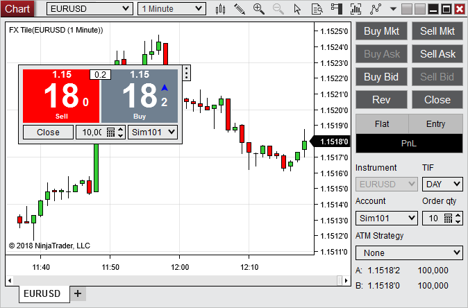 |
Added Psychological Line Indicator Feature #12778
The Psychological Line displays a ratio of what percent of bars were up bars over a specified number of bars. A higher ratio may indicate the price is more likely to drop. A lower ratio may indicate the price is more likely to rise.
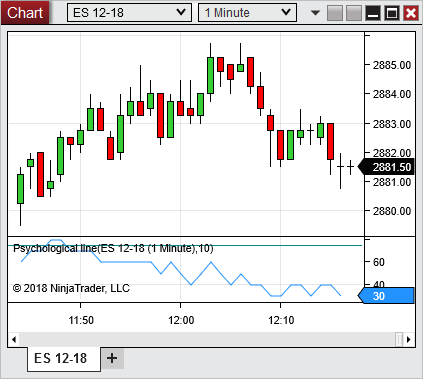 |
Improved icons UI Feature #13130
Implemented new icons to further increase the clean and sleek feel of the platform.
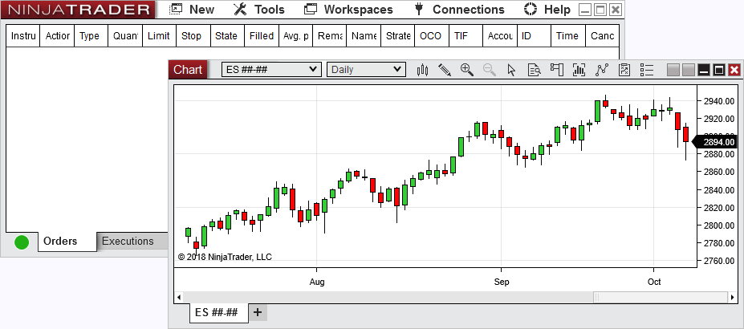 |
Added Chart - Mini column Market Analyzer Feature #12893
The Chart - Mini displays a user specified span of time for a quick view of the market. The time does relate across rows. So, if it is 1:05pm and it has a 5 minute span, it will display the last 5 minutes from 1:00pm to 1:05pm
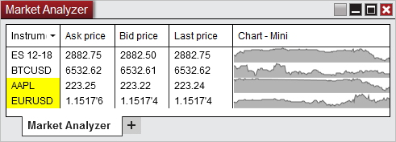 |
Added Chart - Net change column Market Analyzer Feature #13101
The Chart - Net change column is a quick visualization to see the movement of the net change for the session. The start of the column is the session open and the end is the session close. The time does not relate across rows.
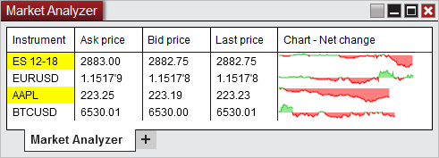 |
Added a Depth Chart for cryptocurrencies Depth Chart Feature #12326
The Depth Chart is a utility for cryptocurrencies that shows an aggregated view of the current order box. This creates an easy display to measure the resistance per side for the price to move.
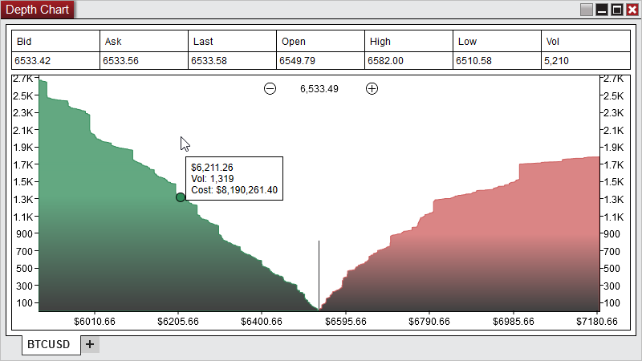 |
Added the ability to disable global simulation mode directly from the warning message Orders Feature #13067
Previously when global simulation mode was enabled and you would select a live account you would have to click through the Control Center to disable global simulation mode. Now it can be done quickly and easily, right from the warning dialog.
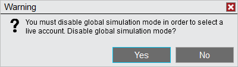 |
Added icon to access the QTY Pad Order Feature #13048
The QTY Pad was a feature often missed since it was accessed by middle mouse clicking. Now we have added a button to access the QTY Pad, which can quickly adjust your order quantity and has the ability to configure the available options.
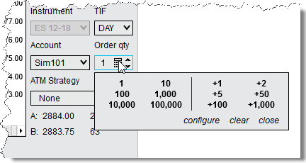 |
Added option to match data series width for indicators using a bar plot style Chart, Indicator Feature #12303
Often times when using an indicator that uses a Bar Plot style, you want the width to match the data series. Setting it and then adjusting the charts compression would then result in them not matching again. Now there is an option to have it dynamically match.
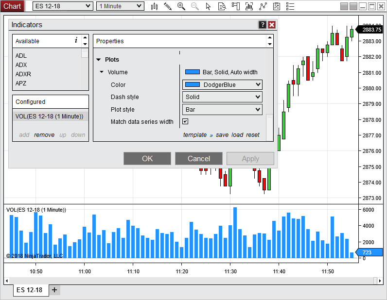 |
Updated required version of Traders Workstation for Interactive Brokers to 973 and added the ability to enable additional functionality that is in beta Interactive Brokers Feature #13053
Beta function can be enabled within the connections properties.
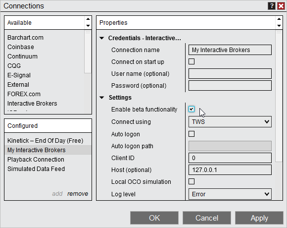
The following functionality has been implemented for beta. •Unfiltered real-time data •Support for linked accounts •Improved level II data handling •The equities volume multiplier is now applied to all equities •Added the ability to remove equities volume multiplier by adding |||||1 to the instruments symbol mapping
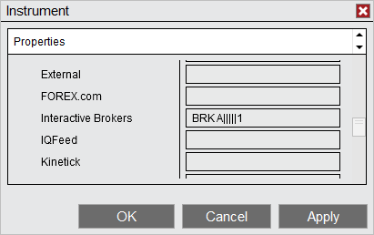
|
Added the ability to use the greatest right side margin when it is set in both a script and the chart Chart, NinjaScript Feature #13070
Prior if a script set a right side margin and you had a custom right side margin they could conflict with each other. Now we have added the ability to use the greatest margin. |
Issue # |
Status |
Category |
Comments |
12951 |
Fixed |
Alerts |
Alerts could not be set to occur at the same time each day |
13147 |
Fixed |
Bars |
Requesting bars with GetBars could yield wrong data |
13042 |
Fixed |
Chart |
Cross hair cursor on X-Axis on future date did not show the date |
13068 |
Fixed |
Chart |
Multi-data series charts sometimes would not plot the session break line |
13138 |
Fixed |
Chart |
Ray line using 1st series price copied to 2nd series price if chart had multiple data series in the same pane |
13178 |
Fixed |
Chart |
Chart interval selector cut off portion of window when too many intervals were used |
13181 |
Fixed |
Chart |
In some scenarios using Default 24x5 Trading hours on the CL resulted in missing daily bars for Mondays |
13207 |
Fixed |
Chart |
Panels heights on charts could be minimized all the way down, preventing ability to properly adjust the panel |
13038 |
Fixed |
Chart, Data |
In some scenarios historical data was not being requested up to the current date |
13077 |
Fixed |
Chart, Indicator |
Woodies CCI could have an error when switching data series |
13090 |
Fixed |
Chart, NinjaScript |
Additional spacing for text at the bottom left of the chart applied to panels that did not have the NinjaTrader copy write text |
13167 |
Fixed |
CoinBase, Chart |
Volume chart type did not display as expected |
13023 |
Fixed |
Coinbase, Data |
Real time volume was not including full volume |
13194 |
Fixed |
Commissions |
Resolved an error that could occur when changing commissions templates |
13116 |
Fixed |
Control Center, Orders |
In some scenarios simulated orders to a live account did not show the stop price In the Orders tab |
13025 |
Fixed |
Database |
Resolved a scenario where after removing a custom bar type a multi-data series chart may not roll over |
13047 |
Fixed |
DrawingTool |
Drawing object properties could not be guaranteed accessible when an indicator accessed the collection in State.Terminated on chart close |
13121 |
Fixed |
DrawingTool |
Order Flow Volume Profile Drawing tool did not work correctly when in UTC+02 time zone |
13185 |
Fixed |
DrawingTool |
Ruler drawing tool rounded incorrectly for instruments whose ticksize has more than 6 fractional digits |
13201 |
Fixed |
DrawingTool |
Applying a template to a Polygon resulted in the object disappearing |
13142 |
Changed |
eSignal |
Updated supported eSignal client to 12.9.4919.1048 |
13078 |
Fixed |
eSignal, Data |
Real-time and historical forex volume did not match |
13105 |
Fixed |
Forex.com |
Resolved a scenario where an ATM's stop could successfully change but showed as Change Submitted then couldn't be canceled |
13155 |
Done |
Forex.com |
Forex.com connection was removed from beta |
13020 |
Fixed |
FXCM |
Update FXCM API to 1.6 |
13064 |
Fixed |
FXCM, Orders |
Orders and executions could show more than 1 event update |
13060 |
Fixed |
Historical Data Window |
Was unable to import MetaStock data |
13206 |
Fixed |
Hot Key |
Hot keys to switch snap mode did not function while drawing an object |
13087 |
Fixed |
Hot Key, Chart Trader |
Some order entry Hot Keys stopped working when Chart Trader was hidden |
13033 |
Fixed |
Indicator |
Resolved some scenarios that resulted in the Chalkin money flow displaying incorrect values and incorrect x-axis scaling |
13100 |
Fixed |
Indicator |
In the indicator properties window, extended the ability to click the 'i' to show the description for a selected indicator to configured indicators |
13119 |
Fixed |
Indicator |
Pivots indicators could not be run on top of bars with secondary daily type |
13169 |
Changed |
Indicator |
Rearranged the properties to some of the newer indicators for consistency |
13044 |
Fixed |
Indicator, Tick Replay |
When using Volume profile with TickReplay and split session trading hours an error could occur |
13000 |
Fixed |
Interactive Brokers |
US equities did not have a multiplier applied for volume when only the default exchange was selected |
13188 |
Fixed |
Level II Window |
Tracking market makers did not work if the connection displayed them with lower case letters |
13054 |
Changed |
Localization |
Translated additional areas of the platforms for the available languages |
13212 |
Fixed |
Localization, Indicator |
Pivot indicators could select incorrect PivotRange depending on localization |
13074 |
Fixed |
Market Analyzer |
Blank name property for indicator column resulted in an error |
13089 |
Fixed |
Market Analyzer |
Indicator column title displayed inconsistently on workspace/template restore |
13133 |
Fixed |
Market Analyzer |
VWAP column did not use decimals |
13180 |
Fixed |
Market Analyzer |
Bar graph colors for indicator columns got set to blank when selecting two bar graph indicator columns in a row |
13222 |
Fixed |
Market Analyzer |
Historical multi-series NinjaScript bar processing was not working as expected |
12941 |
Fixed |
NinjaScript |
Resolved a scenario where a NinjaScript error could not be accessed until the indicator properties window was closed |
13110 |
Fixed |
NinjaScript |
Foreign language characters in class names generated incorrect code |
13141 |
Fixed |
NinjaScript |
SetStopLoss / SetProfitTarget orders could get stuck in Initialized when a strategy attempted to resume with ImmediatelySubmit |
13191 |
Fixed |
NinjaScript |
Resolved a scenario where exporting NinjaScript resulted in an error |
13079 |
Fixed |
NinjaScript Editor |
Save as had stopped updating NinjaScript name property |
13104 |
Fixed |
NinjaScript Editor |
When a Find dialog was open in the NinjaScript editor, it was on top of all non modal windows |
13177 |
Fixed |
NinjaScript Editor |
After closing a tab the Ctrl + Tab keyboard combination resulted in an error |
13034 |
Fixed |
NinjaScript, Chart |
Reload all historical data stoped secondary series in a script from updating on another chart |
13075 |
Fixed |
NinjaScript, DrawingTool |
Default templates for text drawing object could shift text placement when used in a script |
13183 |
Fixed |
NinjaScript, DrawingTool |
Resolved some scenarios where regions were misaligned or did not plot |
13190 |
Fixed |
NinjaScript, Order Flow + |
Bars.BarsSinceNewTradingDay was not resetting as expected on Volumetric bars |
13198 |
Fixed |
Order |
Simulated GTD orders did not work correctly |
13092 |
Fixed |
Order Flow + |
Order Flow Volume Profile's Extended Naked Point of Control feature did not work in some cases |
13113 |
Fixed |
Order Flow + |
Cumulative Delta returned a 0 on first live tick |
13134 |
Fixed |
Order Flow + |
Order Flow Depth Map historical could have some blank areas |
13145 |
Fixed |
Order Flow + |
Order Flow Volume Profile with limited tick data caused session rendering to be off |
13196 |
Fixed |
Order Flow + |
Volumetric bars didn't properly work with cryptocurrencies |
13203 |
Fixed |
Order Flow + |
OrderFlow VolumeProfile would not display initial balance lines in some scenarios |
13157 |
Fixed |
Playback, Adapter |
Resovled a scenario where recording data for Playback stopped real-time data from coming in. |
12862 |
Fixed |
Properties Grids |
When typing to select an item, was not able to append what is typed to more precisely select an item |
13172 |
Fixed |
Strategies, Orders |
Disabling and enabling strategies could result in orders stuck in state Initialized or CancelPending |
13024 |
Fixed |
Strategy |
In some scenarios simulation orders did not cancel when a strategy was disabled |
13173 |
Fixed |
Strategy |
Updating strategy properties from strategy grid to chart could fail |
13210 |
Fixed |
Strategy |
Changing hosted indicator properties while strategy was running resulted in an error |
12986 |
Fixed |
Strategy Analyzer |
Optimizer enums got set to their coded values and ignored user values on the details run |
13080 |
Fixed |
Strategy Analyzer |
During the optimizer details run, invalid information could be sent to the output window and logs |
13111 |
Fixed |
Strategy Analyzer |
Changing user input type from double to int caused error between optimizations |
13114 |
Fixed |
Strategy Analyzer |
Walk Forward Optimization did not show an error if there were no properties to optimize |
13124 |
Fixed |
Strategy Analyzer |
Could not us Volumetric bars with a base period type of Range |
13137 |
Fixed |
Strategy Analyzer |
Saving a backtest template after an optimization caused standard backtests to change and use optimization parameters |
13027 |
Changed |
Strategy Builder |
Renamed some stop / target names to be more clear |
13081 |
Fixed |
Strategy Builder |
Adding an additional data series and setting an internal variable resulted in an error |
13102 |
Fixed |
Strategy Builder |
Setting a variable action with an offset referencing a 2nd data series resulted in an error |
13003 |
Fixed |
Trade Performance |
When Windows was using UK date formatting, Trade Performance's start and end dates became invalid after 24 hour |
13162 |
Fixed |
Trade Performance |
Filters would reset when selecting Generate |
13205 |
Fixed |
Trade Performance |
Display mode was not persisted and did not save to the workspace |
13164 |
Fixed |
Trading Hours |
In some scenarios using the Add Monday through Friday feature for sessions would not save to the template |
13106 |
Fixed |
Window Linking, Chart |
Interval linking to color Link All did not work with charts |
13097 |
Fixed |
Workspaces |
Resolved a scenario that could result in a saved workspace being blank |
October 17, 2018
Issue # |
Status |
Category |
Comments |
13249 |
Fixed |
NinjaScript |
Resolved an unintentional code breaking change |
October 29, 2018
Issue # |
Status |
Category |
Comments |
13294 |
Changed |
Chart |
Reduced chart panel minimum height |
13257 |
Fixed |
Chart Trader |
Width did not persist when hiding/unhiding |
13251 |
Fixed |
Interactive Brokers |
With beta functions enabled position updates could show on the wrong expiry |
13268 |
Fixed |
Market Analyzer |
Chart - Net change did not properly function when opened before the session start |
13262 |
Fixed |
Trade Performance |
In some scenarios filters could become unchecked unexpectedly |
November 2, 2018
Issue # |
Status |
Category |
Comments |
13328 |
Fixed |
Chart |
Resolved a scenario where chart borders would not display as expected |